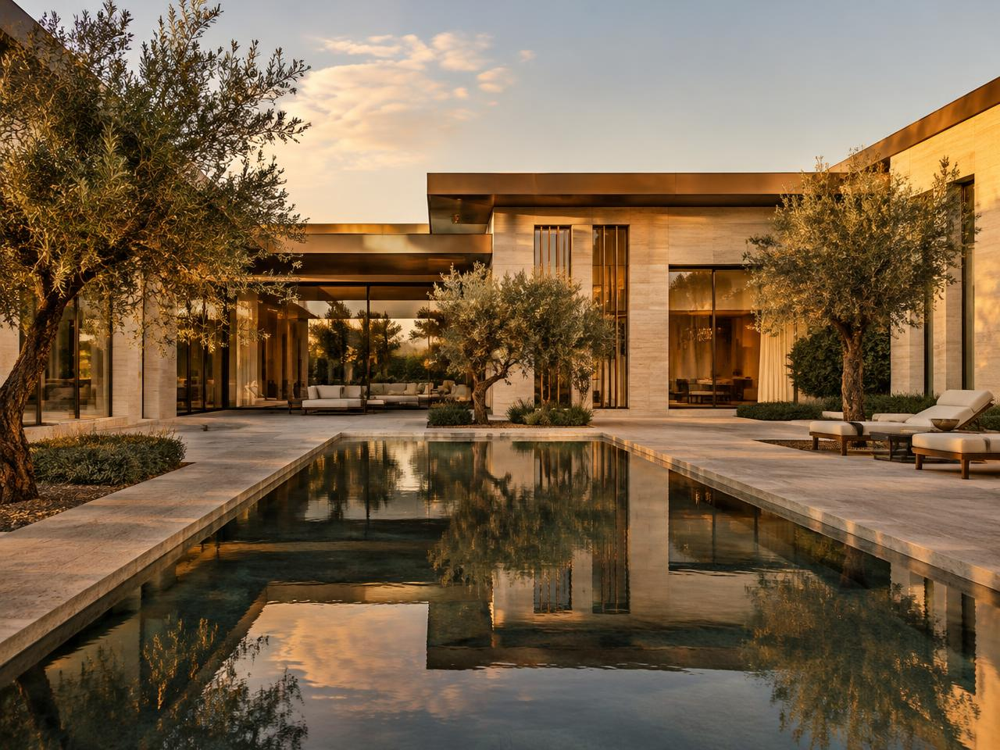
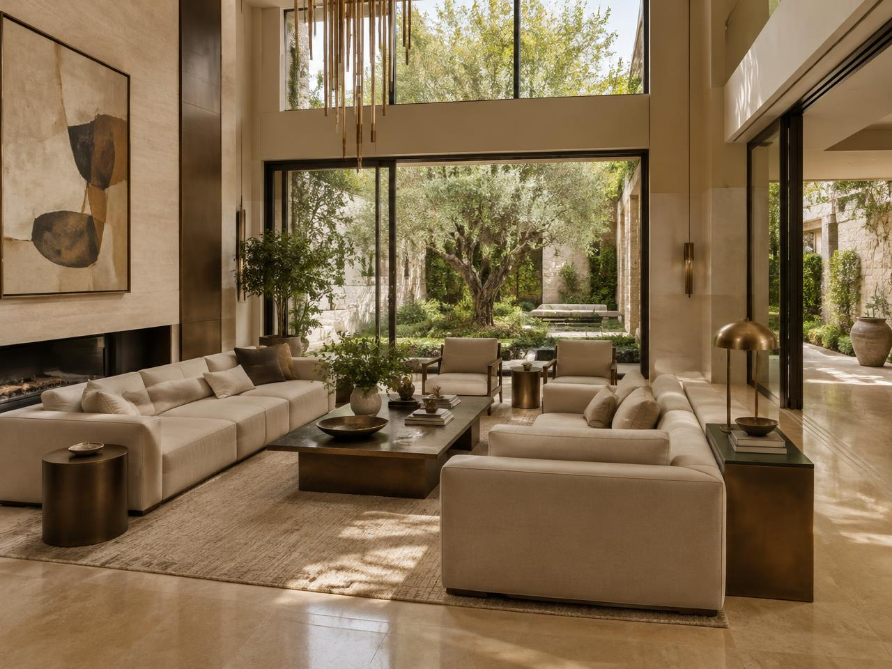
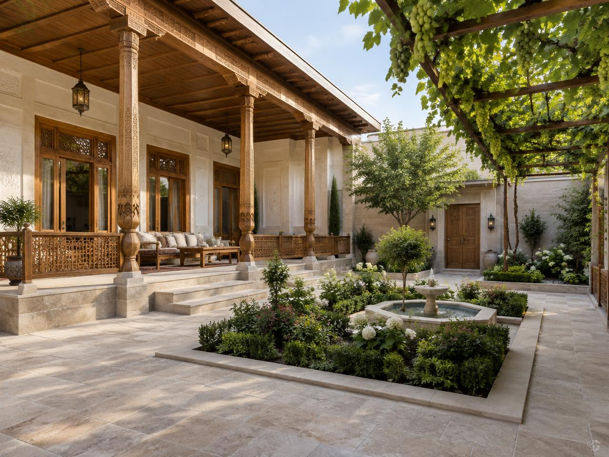

01
Loyiha 01 / 04 · Toshkent, Yunusobod
Travertin Villa
Ichki hovli, aks ettiruvchi hovuz va zaytun daraxtlari atrofida qurilgan bir qavatli villa.

01 — 2025- Joylashuv
- Toshkent, Yunusobod
- Yil
- 2025
- Maydon
- 640 m²
- Xizmat
- Loyiha + qurilish
Loyiha haqida
Uy hikoyasi.
Uchastka markazida hovuzli ichki hovli joylashgan: barcha xonalar unga qaraydi, shuning uchun uy kun bo‘yi tabiiy yorug‘lik bilan to‘ladi. Travertin devorlar va yog‘och detallar issiq, xotirjam muhit yaratadi.
Aks ettiruvchi hovuz
Hovuz uyning markaziy kompozitsiyasiga aylandi.
Zaytun daraxtlari
Soya beradi va hovliga o‘ziga xos xushbo‘y fon yaratadi.
Travertin pol va devorlar
Yozda salqin, kechqurun iliq yoritiladi.
Bir qavatli reja
Hovli bilan uzluksiz bog‘langan qulay joylashuv.
Galereya
Boshqa ishlarimiz.


Qo‘llangan xizmat
Kalit topshirish asosida uy qurilishi